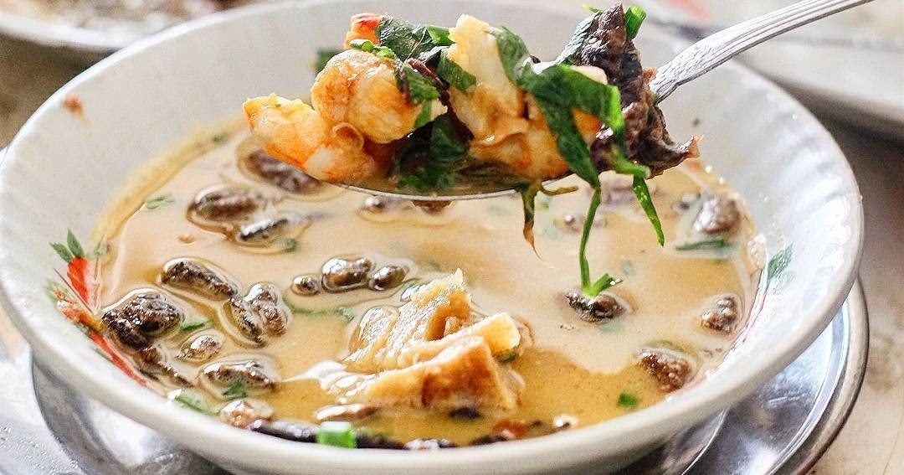

5 Tempat Kuliner di Kota Medan dan Sekitarnya
Indonesia telah lama dikenal sebagai negara dengan kekayaan kuliner yang beragam dan menarik. Hal ini memang bukan omong kosong belaka. Di setiap daerahnya, Indonesia mempunyai berbagai macam hidangan khas yang lezat dan menggugah selera. Ragam kuliner yang dimiliki masing-masing daerah ini bisa menjadi daya tarik tersendiri bagi masyarakat luar yang ingin berkunjung.
Salah satu daerah yang mempunyai wisata kuliner menarik adalah Kota Medan. Ibu Kota Provinsi Sumatera Utara ini memang terkenal dengan buah durian khas yang lembut, manis, dan sedikit pahit. Tidak heran, buah durian menjadi oleh-oleh wajib yang banyak diburu wisatawan ketika sedang berkunjung ke Medan.
Bukan hanya itu, terdapat beberapa wisata kuliner Medan lain yang populer dan wajib Anda coba. Mulai dari sajian soto kuah segar, mie ayam, sajian kopi khas Medan yang banyak digemari masyarakat. Jika Anda sedang berkunjung atau berencana liburan ke kota Medan, beberapa wisata kuliner Medan bisa menjadi rekomendasi Anda.
Tidak perlu khawatir, beragam kuliner yang disajikan bisa Anda dapatkan dengan harga yang terjangkau. Sehingga ini menjadi pilihan menarik untuk berwisata kuliner bersama keluarga besar maupun dengan teman-teman. Anda pun bisa memanjakan lidah dengan hidangan-hidangan menarik dan bercita rasa khas yang menggugah selera.
1. Kedai Durian Ucok
Wisata kuliner Medan yang enak dan populer pertama tentu saja Kedai Durian Ucok. Kedai yang menyajikan buah durian dengan cita rasa manis dan sedikit pahit ini terletak di Jalan Wahid Hasyim, yang sebelumnya terdapat di Jalan Iskandar Muda.
Ini merupakan kedai durian paling laris yang sering dikunjungi banyak wisatawan dari luar daerah. Jika tertarik, Anda bisa mengunjungi langsung Kedai Durian Ucok yang buka malam hari hingga dini hari.
2. Soto Kesawan Medan
Wisata kuliner Medan yang tidak kalah terkenal adalah Soto Kesawan. Berbeda dengan sajian soto kuah pada umumnya, Soto Kesawan mempunyai cita rasa yang nikmat lengkap dengan tambahan udang di dalamnya. Udang yang biasanya digunakan adalah udang galah yang mempunyai ukuran cukup besar.
Dalam penyajiannya, biasanya udang digoreng terlebih dahulu kemudian dimasukkan ke dalam kuah soto. Bagi Anda yang tertarik, langsung saja datang ke warung Soto Kesawan yang berada di Jalan Ahmad Yani No.116.
3.Rumah Makan Tabona
Rumah Makan Tabona juga termasuk salah satu wisata kuliner Medan yang perlu Anda coba. Rumah Makan Tabona ini menyajikan beragam menu kari lezat yang kaya rasa rempah. Mulai dari bihun kari, kari ayam, kari kambing, hingga kari daging sapi yang gurih. Rumah makan ini bisa Anda kunjungi di Jalan Mangkubumi, Medan.
Biasanya Rumah Makan Tabina sudah buka mulai pukul 06.30–16.30 WIB. Jika Anda mengunjungi saat jam makan siang, maka harus antre dengan sabar karena banyaknya pengunjung yang datang.
4.Kedai Kopi Apek
Wisata kuliner Medan yang lezat dan populer berikutnya adalah Kedai Kopi Apek. Ini merupakan kedai kopi tertua di Medan yang sudah berdiri sejak tahun 1922. Tidak heran, hingga sekarang kedai kopi ini masih menjadi favorit masyarakat sekitar juga wisatawan yang berkunjung dari luar daerah.
Tidak perlu diragukan, kedai ini selalu menyuguhkan kopi pilihan terbaik dengan pengaturan suhu air hingga teknik mengaduk yang tepat. Bagi Anda para pecinta kopi, kedai ini tidak boleh dilewatkan jika sedang berkunjung ke Medan.
5. Merdeka Walk

Wisata kuliner Medan selanjutnya adalah Merdeka Walk. Merdeka Walk merupakan kawasan hiburan dan tempat wisata kuliner terbesar di Medan. Di sini, Anda bisa menjumpai 30 outlet kuliner dengan beragam hidangan menu yang menarik untuk dicoba. Mulai dari sajian soto kuah, lontong ayur, sop buntut, steak, hingga sushi.
Jika Anda ingin berkunjung, biasanya Merdeka Walk dibuka pada malam hari. Ini menjadi salah satu rekomendasi menarik untuk menghabiskan waktu malam hari bersama teman dan keluarga saat berkunjung ke Medan.